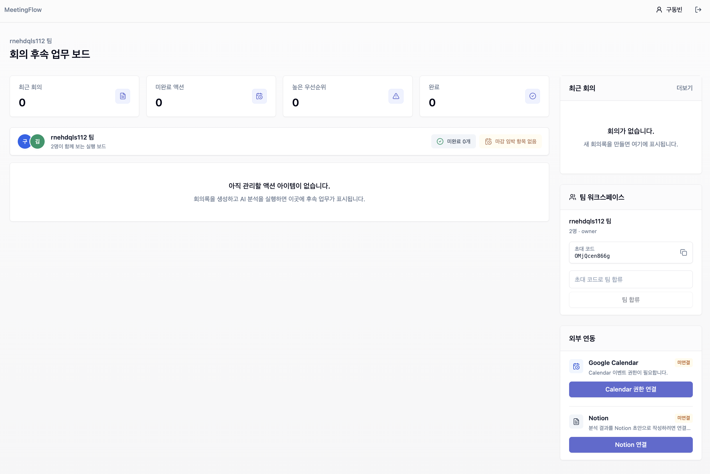

회의록 입력
텍스트를 붙여넣거나 파일을 업로드해 회의 정보를 한곳에 모읍니다.
회의 후속 업무를 자동화합니다.
회의록을 요약, 결정사항, 액션 아이템, 일정/문서/메일 후속 처리로 연결하는 AI 업무 도구입니다.

텍스트를 붙여넣거나 파일을 업로드해 회의 정보를 한곳에 모읍니다.
요약, 결정사항, 담당자, 마감일, 우선순위를 구조화합니다.
DashBoard 관리, Calendar, Notion, Email 초안 생성으로 회의 이후 행동까지 이어갑니다.
프로젝트 피드백 남기기
GitHub 계정으로 로그인하면 댓글이 본인 리포의 GitHub Discussions에 자동 저장됩니다.